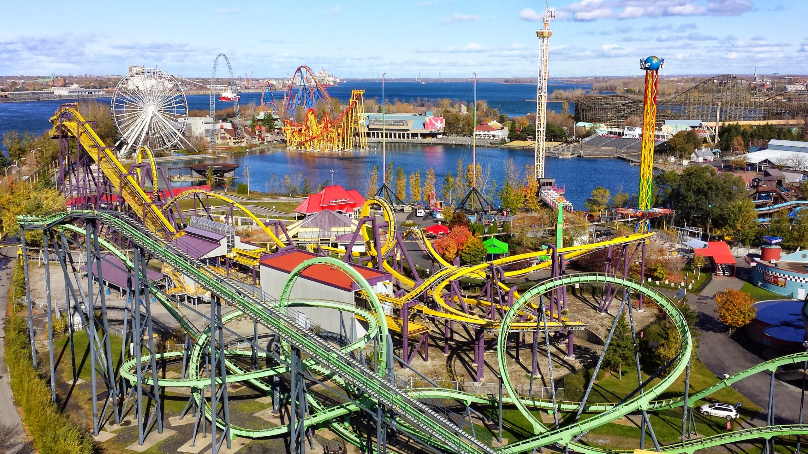
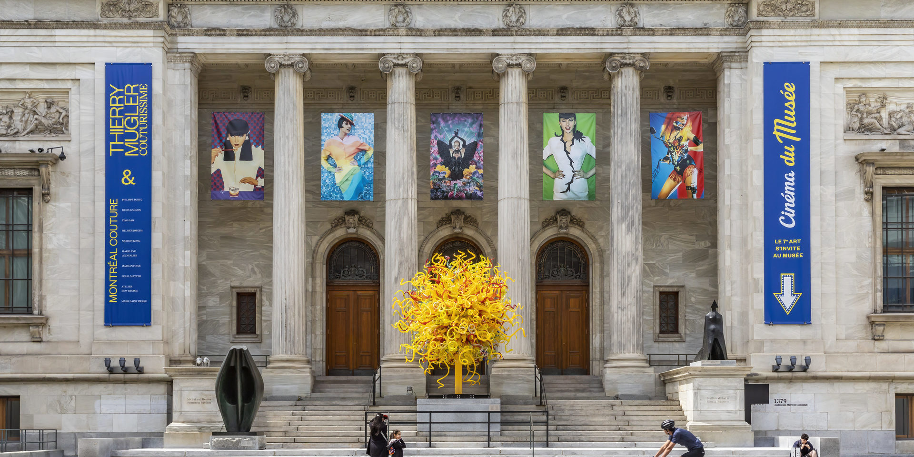

Activities to do in Montreal

Go see a Montreal Canadien hockey game
Watching a hockey game in the Bell Center is a must! It is one of the sport and arena that has the best environment.

Go visit LaRonde amusement park
Montreal's amusement park is one of Canada's best. It has a total of 42 amazing rides to have fun and enjoy the day.

Go visit Montreal's musems
Montreal has a suprising amount of musems. They are all different and interesting in their own way. I personally recommend the Musée des beaux-arts.